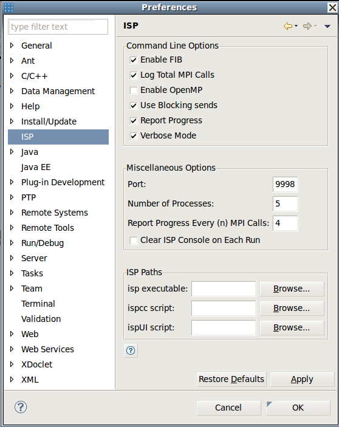

|
|
ISP-Plug-in Preferences |
To edit preferences open eclipse and go to Window -> Preferences -> ISP
| Preference | Meaning or Condition When Selected |
|---|---|
| Enable FIB | Enables detection of irrelevant barriers |
| Log Total MPI Calls | Outputs the number of MPI calls trapped for each rank (Console View) |
| Enable OpenMP | Enables OpenMP based parallelization on multi-core machines |
| Use Blocking Sends | Sends will be treated as blocking, without buffering |
| Report Progress | Outputs progress every (n) MPI calls (default is 4). Note: If this is checked, please set the Report progress field below |
| Verbose Mode | Output the transition list for all interleavings, otherwise only output last interleaving if deadlock. |
| Port | Assigns the port to communicate with MPI programs(default is 9999). ISP will search for a port that is free if specified port is unavailable |
| Number of Processes | The number of processes to start when analyzing the MPI program (defualt is 2) |
| Report Progress Every (n) MPI Calls | Outputs progress every (n) MPI calls (default is 4). Note: This is ignored if Report Progress is not checked |
| Clear ISP Console on Each Run | Clears ISP Console output before each run. If it is not checked then the more recent results are appended to the top |
| isp executable | The location of the isp executable |
| ispcc script | The location of the ispcc script |
| ispui script | The location of the ispui script |
Back to Top | Back to Table of Contents
School of Computing * 50 S. Central Campus Dr. Rm. 3190 * Salt Lake City, UT
84112 * isp-dev@cs.utah.edu
License